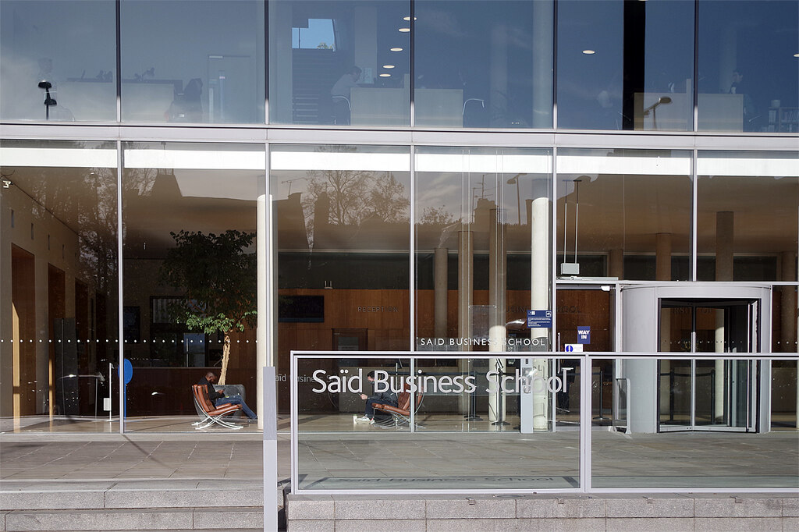
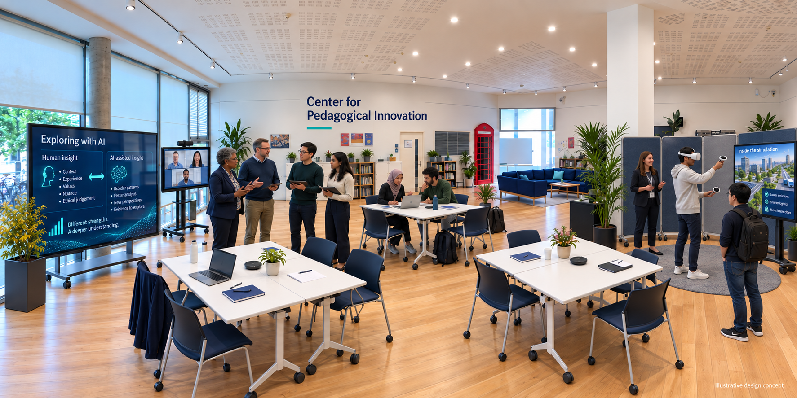

Centre for Pedagogical Innovation
Human-centred teaching and learning in the age of artificial intelligence.
The Centre for Pedagogical Innovation (CPI) helps educators improve teaching, assessment and learning. We bring together educators, researchers and partners to design and test new approaches. Our work includes responsible artificial intelligence (AI), immersive methods and experiential learning.
The more technology can do, the more teaching matters.

Saïd Business School, Oxford · Photograph: Stephen McKay · Creative Commons Attribution-ShareAlike 2.0 licence
Status
Approved and fundedPreparatory development is now under way.
Funding
£100,000 from the Saïd FoundationAlongside £12,000 from the Van Houten Fund.
Leadership
Founding director and academic sponsorsLed by David Dodick with colleagues across the School.
About the centre
A school-wide capability for better teaching
CPI gives educators across Saïd Business School a supported place to develop and test new approaches. We work across degree programmes, accredited offerings, Executive Education and Oxford Saïd Online.
CPI offers practical support now. Structured pilots, research, evaluation and shared learning begin in Hilary term 2027. We help educators decide when new methods improve learning and when other approaches work better.
Pedagogy ahead of technology.
The Saïd Foundation and Van Houten Fund support the programme. It runs from Michaelmas term 2026 to Hilary term 2028. Faculty and programme teams can already bring us questions about teaching, assessment, AI and experiential learning.
Our foundation
What an Oxford education stands for
Close dialogue and judgement under intellectual pressure are central to an Oxford education. Tutorials, case discussions and debate ask students to defend, revise and apply their thinking.
We strengthen those practices. We also help educators test approaches that can improve learning.
Who CPI supports
We support faculty, associate faculty, tutors and other teaching contributors. We also work with programme teams, learning specialists and researchers across Oxford Saïd.
Support
How CPI can help
We offer practical, confidential support to educators across the School. Bring us a live teaching or assessment question. Support can range from a short consultation to a structured pilot.
Pathway one
Improve a course or learning experience
Support with course design, classroom activity, discussion, cases, simulations, feedback and experiential learning.
Pathway two
Rethink an assessment
Support with assessment design, AI permissions, authenticity, academic judgement and clear student guidance.
Pathway three
Develop or test an idea
We help you scope, pilot and evaluate a promising teaching innovation.
Pathway four
Connect teaching and research
We help connect pedagogical inquiry and educational experimentation with wider research interests.
Or start by exploring the resources already available.
Funded programme
The funded programme: 2026 to 2028
The Saïd Foundation has awarded CPI £100,000. This builds on £12,000 in seed funding from the Van Houten Fund. Between 2026 and 2028, we will develop and test faculty support, teaching pilots, research and evaluation.
Strand one
Teaching and assessment pilots
We will develop, test and evaluate new approaches with faculty. The work will involve four to six modules across the programme portfolio.
Strand two
Faculty champions
We will establish a voluntary peer cohort across academic areas. CPI will support members through co-design, pedagogical assistance and peer exchange.
Strand three
Faculty research and seed grants
We will support up to six projects through awards of £2,500. Awards will cover pedagogical research and research using AI or immersive technology. The first application call opens in Hilary term 2027.
Strand four
Context-rich case development
We will begin an international cross-cultural case prototype. It will explore how immersive, experiential or AI-supported methods can strengthen managerial judgement.
Strand five
Oxford Saïd forum on teaching, learning and AI
We will develop a School-facing forum for faculty, students, alumni and selected collaborators. Participants will examine what CPI learns from its pilots and research.
Strand six
Evaluation and sustainability
We will build proportionate, independent evaluation into the programme. Findings will guide what we repeat, revise, scale, research further or stop. They will also support planning beyond the grant period.
Status: preparatory activity begins in Michaelmas term 2026. The formal launch follows in Hilary term 2027. The first pilots will run by the end of that term. We plan to hold the inaugural forum in June 2027.
Where to start
Get support. Explore useful resources. Become involved.
Choose the route that fits your needs. Two routes are available now. Pilot and participation opportunities will open as the programme develops.
Available now
Bring us a teaching or assessment challenge
Ask about course design, assessment redesign, responsible AI, experiential learning or formative feedback. A short conversation is enough to start.
Bring us a challengeAvailable now
Explore resources and examples
Use the Oxford AI Toolkit, Teaching at Saïd Canvas hub, faculty videos and brown bag workshops. We will add further resources as CPI develops.
Explore resourcesIn development
Propose or join a pilot
Register interest in future pilots, faculty champion activity, research projects or CPI events. Calls open from Hilary term 2027.
Register interest in CPI pilotsExisting foundations
Resources you can use today
CPI builds on established Oxford Saïd teaching and learning initiatives. Educators can use these resources today.
Interactive tools
Oxford AI Toolkit
These public interactive tools help educators navigate AI in teaching and assessment. They reflect Oxford requirements and current practice at Oxford Saïd.
Faculty community
Teaching at Saïd Canvas hub
Find practical teaching resources, recorded workshops and development pathways in one Canvas hub.
Peer practice
This Is How I Teach
Oxford Saïd faculty share the choices, habits and craft behind their teaching.
Workshops
Faculty brown bag workshops
Colleagues explore practical teaching questions together, from discussion techniques to AI in the classroom.
Looking ahead: CPI will develop further faculty development, pilot, research and evaluation activity. We will announce the first calls and events from Hilary term 2027.
Research
Our research agenda
Specific, testable questions guide CPI's pilots and seed-grant projects. We study AI-enabled and immersive approaches alongside discussion, feedback, participation and judgement.
Question one
Does AI deepen case discussion, or flatten it?
We will test whether generative AI improves human reasoning in case discussions or substitutes for it.
Question two
What transfers from immersive simulation to real decision-making?
We will examine which forms of managerial judgement immersive simulation strengthens. We will also test whether gains persist outside the simulation.
Question three
Can students learn to challenge AI well?
We will examine whether structured practice helps students challenge AI outputs, assumptions, biases and errors.
Question four
Does AI feedback help students develop, or just reassure them?
We will study whether AI-mediated feedback improves learning and revision. We will also look for fluent but shallow improvement.
Question five
What makes discussion-based teaching intellectually productive?
We will investigate how preparation, questioning, case design, group structure and facilitation shape classroom dialogue and judgement.
Question six
Which forms of feedback lead to meaningful revision?
We will examine how the timing, format and source of feedback affect revision and future performance.
Faculty research enablement
CPI will support pedagogical research and faculty research using AI or immersive technology. Seed grants will help faculty develop evidence, research outputs and routes to external funding.
We can also help faculty document teaching innovation, evaluation and educational impact. This evidence may support professional development and comparative research.
Evaluation
How we will know it works
We will match evaluation to the scale and purpose of each activity. A small change may need reflection and student feedback. A larger pilot may need comparative evidence, specialist support or independent evaluation. We want useful evidence about what to scale, repeat, revise or retire.
Depending on the activity, evidence may include:
- Teaching or assessment quality
- Student engagement and learning
- Faculty experience and confidence
- Faculty time and operational demands
- Peer observation
- Repeatability and adaptability
- What did not work and why
- Reusable resources
- Potential for wider adoption
- Potential for further research or publication
The funded programme includes independent evaluation. We will share findings across the School so effective practice can travel.
The Nest
A future home for teaching innovation
The Nest is CPI's intended future physical home, subject to consultation and approval. We envisage a flexible, shared setting for co-design, workshops, immersive learning, discussion and support.

A place to experiment
Educators can try new approaches before using them in live teaching. Co-design, peer observation and structured feedback will support them.
A place to collaborate
Faculty, programme teams and learning specialists can connect teaching practice across the School.
A place to share
We will share findings, materials and methods across Oxford Saïd. Good practice can then travel beyond its original course.
The concept does not assume exclusive occupation or displacement of current users. Planning will consider existing users, future users, Skoll-linked activity and other School priorities. CPI can operate in existing rooms while plans develop.
Team
Leadership and faculty sponsorship
Faculty sponsors, senior colleagues and contributors across the School support CPI. David Dodick serves as founding director.
Marya Besharov, PhD
Faculty sponsor
Michelle Rogan, PhD
Faculty sponsor
Dr Janette Nhangaba
Senior sponsor
Elina Lam-Gall
Senior partner · Executive Education
Faculty across academic areas can express interest in piloting teaching innovations. Anna Krajewska and Elina Lam-Gall support engagement with Oxford Saïd Online and Executive Education.
Collaboration
Collaboration and coordination
CPI works through School collaboration, University coordination and early external conversations.
School collaboration
During the funded phase, we will work with programme teams and relevant School functions. We will follow established approval and governance processes.
Oxford Saïd
Executive Education
We will work with Executive Education to extend successful approaches where they add value.
Oxford Saïd
Oxford Saïd Online
We will work with Oxford Saïd Online to apply tested approaches to digital learning.
Oxford Saïd
Skoll Centre for Social Entrepreneurship
Planning for The Nest will consider Skoll-linked activity and the School's social-impact community.
University coordination
These units are coordination points. They are not current CPI delivery partners.
University of Oxford
Centre for Teaching and Learning
Potential coordination on faculty development and evaluation.
University of Oxford
AI and Machine Learning Competency Centre
Potential coordination where pilots involve University AI infrastructure or policy.
University of Oxford
Blavatnik School of Government Case Centre
Exploratory conversations about immersive global cases for leadership teaching.
University of Oxford
University AI infrastructure
CPI may use relevant University AI infrastructure and licensed tools. We will follow policy, procurement, information security and data protection requirements.
Early external interest
We have held early conversations with organisations working in teaching innovation, AI and leadership development. None is currently a delivery partner.
Educational leadership
The Atlantic Institute
Early conversations around teaching leadership and critical thinking.
AI and human flourishing
Cosmos Institute
Shared interest at the intersection of philosophy, AI and education.
Technology
Amazon Web Services
Early conversations about cloud technology and AI tooling for education.
Contact
Bring us a teaching challenge
Bring us a question about course design, assessment, responsible AI, experiential learning or feedback. No challenge is too small or too early.
Email directly
Location
Saïd Business School
Park End Street, Oxford OX1 1HP